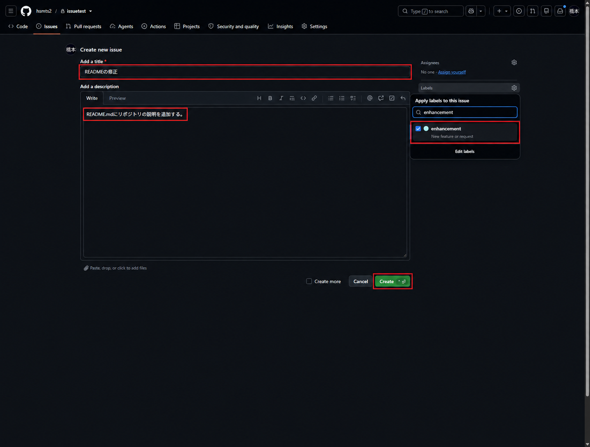
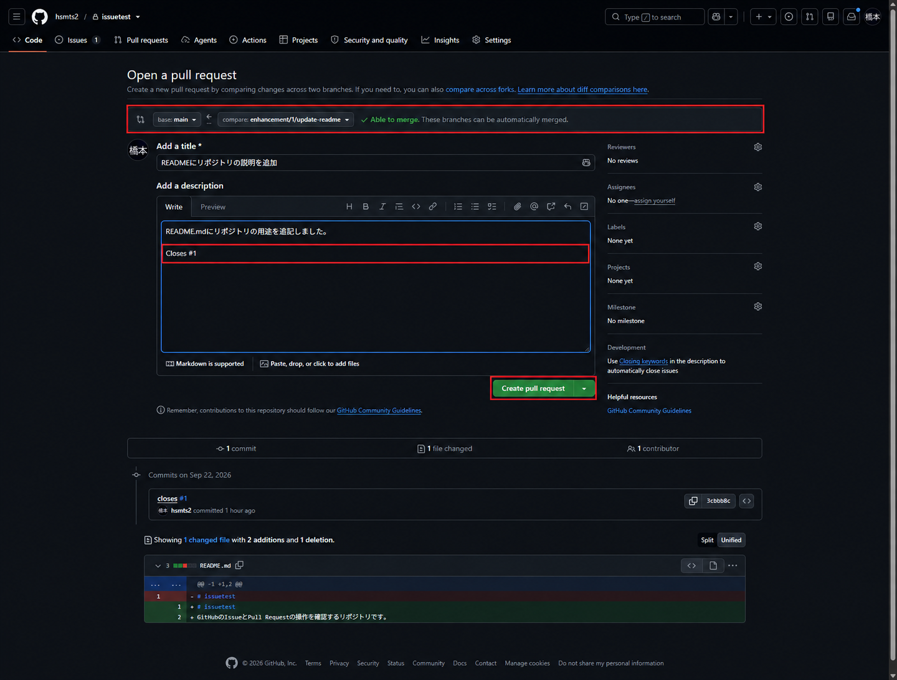
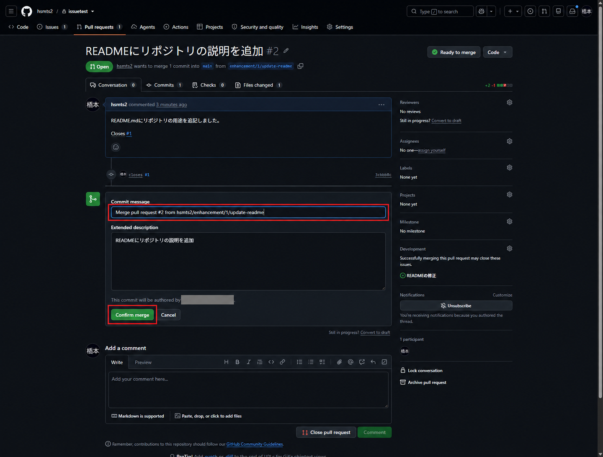
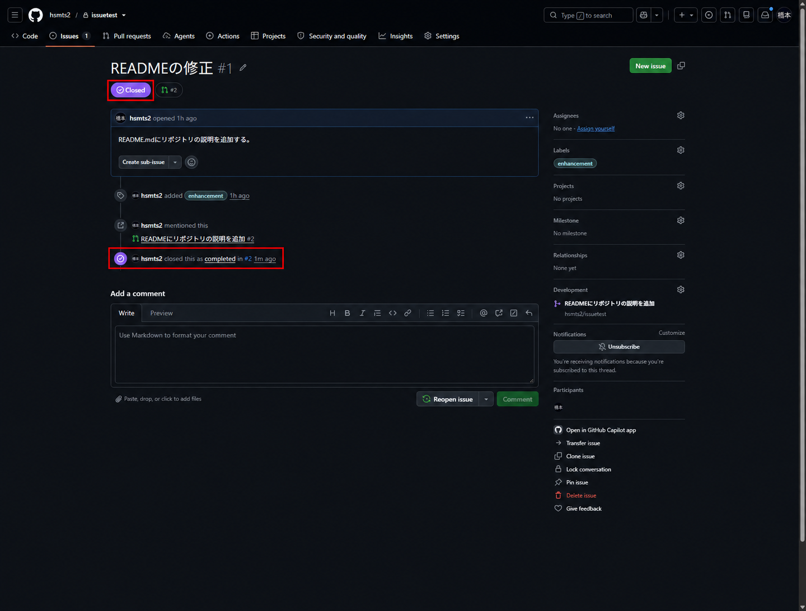

GitHubのPull Requestとレビュー
変更ブランチの送信からPR作成・レビュー修正・マージ後の同期までの手順
Pull Requestの役割
Pull Request（PR）は、作業ブランチの変更を取り込み先へ統合するための提案。pushはブランチの送信、PR作成はレビュー依頼、マージは変更の統合という別の操作
issuetestで行ったIssue作成・PRのマージ・Issue終了確認を掲載。別の担当者による承認とレビュー修正は補足の操作例として記載
認証はGitHub認証、clone・追跡設定はGitリモート操作を参照
| 段階 | 担当・操作 |
|---|---|
| 変更 | 作成者が作業ブランチで編集・確認・コミット |
| 提案 | 作成者がpushし、baseとcompareを指定してPR作成 |
| レビュー | レビュアーが差分・テスト結果を確認 |
| 修正 | 作成者が同じブランチへ追加push |
| 統合 | 必要な承認・チェック完了後、権限を持つ人がマージ |
リポジトリ作成とクローン
GitHub CLIで認証済みの環境で実行。作成済みのリポジトリやフォルダがある場合は再実行しない
1. README付きの非公開リポジトリをGitHubに作成
gh repo create hsmts2/issuetest --private --add-readme2. 保存先へ移動
cd ~/github-book3. HTTPSでクローン
git clone https://github.com/hsmts2/issuetest.git4. クローンしたフォルダへ移動
cd issuetest5. mainの追跡先と未コミット変更がないことを確認
git status6. originがhsmts2/issuetestであることを確認
git remote -vIssueの作成
1. リポジトリのIssuesタブを押下し、New issueボタンを押下
2. タイトルに「READMEの修正」、Add a descriptionに「README.mdにリポジトリの説明を追加する。」を入力。本文欄はコマンドの実行場所ではない
3. Labelsでenhancementを選択し、Createボタンを押下


4. 作成されたIssueの番号を確認。以下はIssue #1の場合で、番号が異なる場合はブランチ名とClosesの番号を置き換える
変更ブランチの作成とpush
originへの書き込み権限とmainの追跡設定があるリポジトリでの操作例。enhancement/1/update-readmeが未作成であることを前提とし、README.mdだけを変更対象とする
1. 未コミットの変更がないことを確認
git status2. 取り込み先mainへ切り替え
git switch main3. mainを前進可能な場合だけ更新。分岐エラーなら停止して履歴を確認
git pull --ff-only4. 変更用ブランチを新規作成して切り替え
git switch -c enhancement/1/update-readme5. VS CodeでREADME.mdを開き、末尾に「GitHubのIssueとPull Requestの操作を確認するリポジトリです。」を追記して保存
code .6. 変更・新規ファイルの一覧を確認
git status -s7. 追跡済みファイルの未ステージング差分を確認。新規ファイルはエディタで内容を確認
git diff8. README.mdだけを次のコミットに登録
git add README.md9. 次のコミットに入る内容を確認
git diff --cached10. 確認した変更をコミット
git commit -m "closes #1"11. ブランチを送信し追跡先を設定
git push -u origin enhancement/1/update-readmePull Requestの作成
1. GitHubのリポジトリ画面でPull requestsタブを選択し、New pull requestボタンを押下
2. baseを取り込み先のmain、compareを取り込み元のenhancement/1/update-readmeに設定。差分と対象ブランチを確認
3. Create pull requestボタンを押下し、タイトル・本文を入力。内容を確認してCreate pull requestボタンを押下
タイトルは「READMEにリポジトリの説明を追加」。本文には変更内容とCloses #1を記載。デフォルトブランチmainへのマージでIssue #1が閉じる。作業ブランチへのpushだけでは閉じない


| 本文の項目 | 記載内容 |
|---|---|
| 目的 | なぜ変更が必要か |
| 変更内容 | 対象ファイルと変更点 |
| 確認結果 | 実行した確認・テストと結果。未実施は未実施と記載 |
| 影響範囲 | 利用者・システム・運用への影響 |
| 戻し方 | 不具合時の復旧方法・注意点 |
CLIを使う場合は、上記の画面操作の代わりに次のコマンドで作成。両方実行して重複作成しないこと
1. base・headを明示してPR作成を開始。対話入力でタイトルと本文を確認
gh pr create --base main --head enhancement/1/update-readmeレビューと修正
1. レビュアーはFiles changedタブで差分を確認し、必要な行にコメントを記入
2. Review changesボタンを押下し、Comment・Approve・Request changesから選択してSubmit reviewボタンを押下
自分が作成したPRを自分で承認することはできない。個人での動作確認と、別のレビュアーによる承認を区別
指摘修正はPRの取り込み元ブランチで行う。次の手順はREADME.mdを追加修正する場合の操作例
1. 修正対象のブランチへ切り替え
git switch enhancement/1/update-readme2. VS CodeでREADME.mdを修正・保存
code .3. 修正内容を確認
git diff4. 修正をステージング
git add README.md5. コミット対象を確認
git diff --cached6. 追加修正をコミット
git commit -m "Address review feedback"7. 同じブランチへ送信。既存のPRに修正が追加される
git push8. ブラウザでPRの反映とコメントを確認
gh pr view --web9. CLIでPR全体の差分を確認
gh pr diff10. 設定されている自動チェックの結果を確認
gh pr checksチェックが未設定の場合、表示がないことをテスト合格とはみなさない。承認・必須チェック・最新ブランチの条件はリポジトリのルールに従う
マージとローカルの更新
1. 差分・承認・必須チェックを確認後、利用可能なマージ方式を選択し、画面の確認ボタンを押下。権限不足やルールで禁止されている場合は管理者・担当者へ確認
| 方式 | 履歴の扱い |
|---|---|
| Create a merge commit | 作業ブランチの履歴を残してマージコミットを作成 |
| Squash and merge | 作業ブランチの変更を1コミットにまとめる |
| Rebase and merge | 作業ブランチのコミットを取り込み先へ付け直す。コミットIDは変化 |
2. 今回はFiles changedでREADME.mdの差分を確認し、Conversationへ戻ってMerge pull requestボタンを押下。コミットメッセージを確認してConfirm mergeボタンを押下


3. PRがMerged、Issue #1がClosedになったことを確認


CLIでもIssue #1の終了状態を確認
$ gh issue view 1 --json number,title,state\n{\n "number": 1,\n "state": "CLOSED",\n "title": "READMEの修正"\n}GitHubでのマージだけでは手元のmainは更新されない。以下はマージ完了後の操作例
1. 未コミットの変更がないことを確認
git status2. ローカルmainへ切り替え
git switch main3. GitHubで統合された変更を取得
git pull --ff-only4. 新しい履歴を確認
git log --oneline -55. 統合済みで不要になったローカルブランチを削除
git branch -d enhancement/1/update-readmeSquash／Rebase方式では-dが未マージとして拒否する場合がある。強制削除せず、PRの統合結果と必要なコミットが残っているかを確認
6. サーバーで削除済みのブランチに対応するリモート追跡参照を整理
git fetch --prune--pruneはローカル作業ブランチやGitHub上のブランチを削除する操作ではない